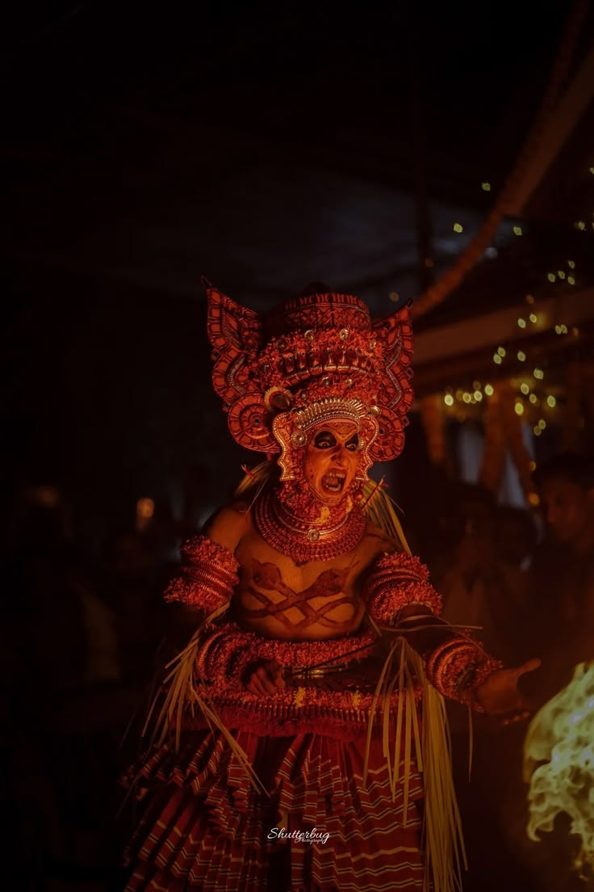
01
Kandanar Kelan
A powerful warrior form associated with stories of fire, courage and transformation.
THEYYAM TRAILS
Follow the drums. Enter the sacred grove. Discover the stories behind the face.
MORE THAN A PERFORMANCE
Theyyam is not simply something you watch. It is a living ritual woven into the cultural landscape of North Malabar.
From the first rhythm of the chenda to the transformation of the performer, every moment carries a story. Our journeys are designed to help visitors understand the people, places, rituals and traditions surrounding each Theyyam experience.
Explore the stories →Happy Clients
Trip Days
Theyyams
Vehicles
Every kolam carries its own identity, costume, movement, music and story.

A powerful warrior form associated with stories of fire, courage and transformation.
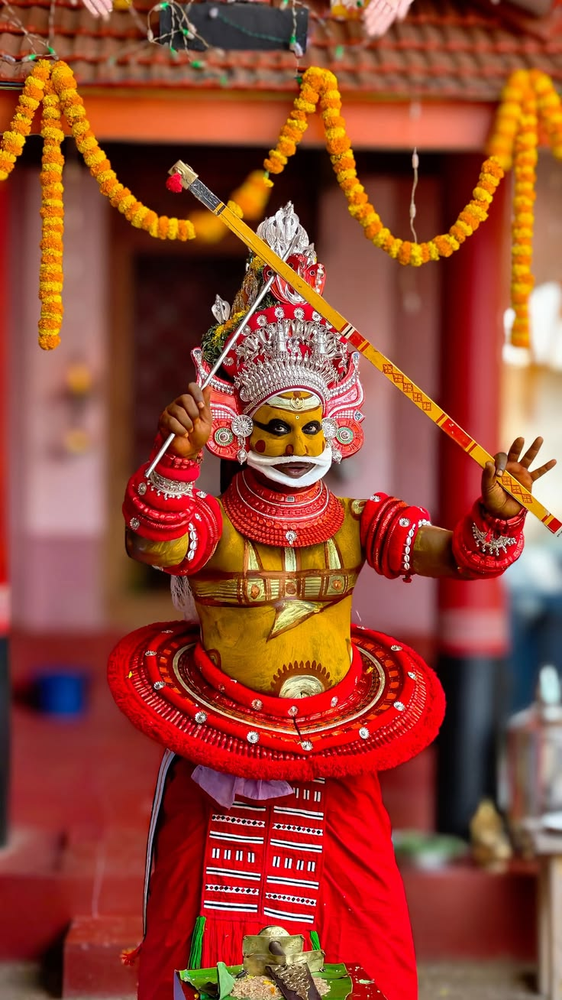
A beloved and widely recognised Theyyam form of North Malabar.
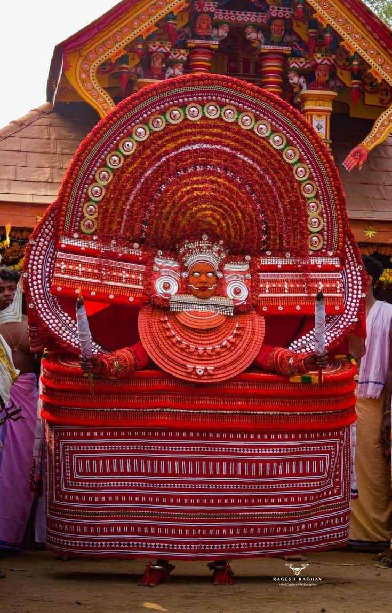
Powerful goddess traditions expressed through colour, costume and ritual.
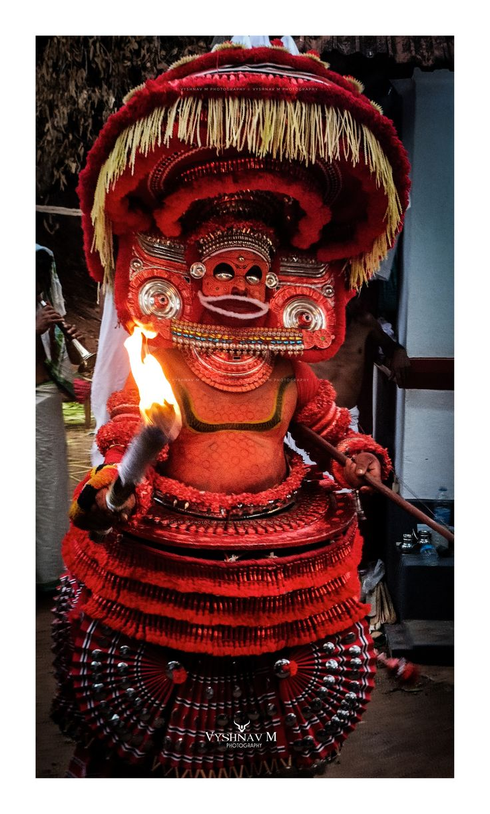
A forest-associated form deeply connected with the landscape of North Malabar.
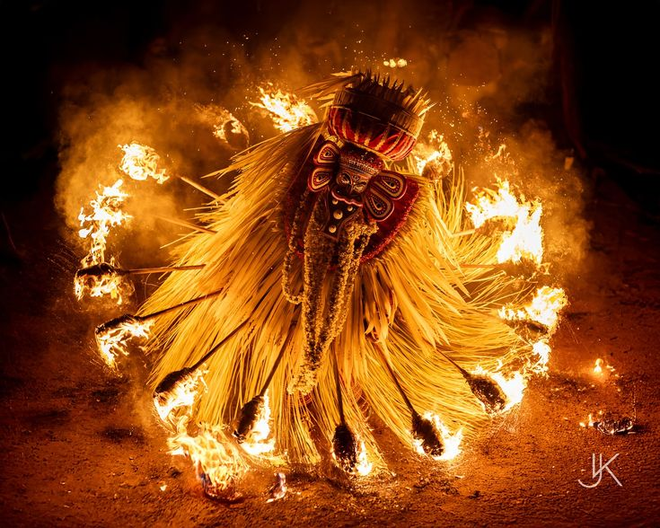
A visually distinctive form where costume, ornaments and movement create an unforgettable presence.
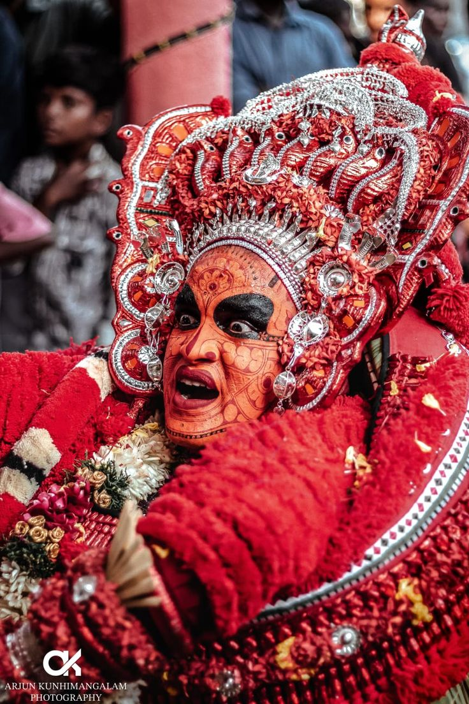
Another celebrated form within the diverse Theyyam tradition.
An evening journey into a traditional Theyyam performance with local guidance and cultural orientation.
A deeper journey combining Theyyam, local food, village landscapes and cultural stories.
Designed for photographers, researchers and travellers who want more time with the tradition.
Choose a date, region or experience and discover available journeys.
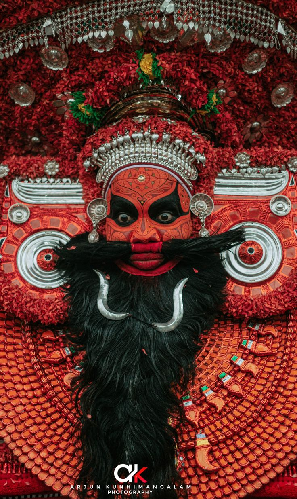
Long before the performance begins, there is preparation — costume, face painting, ritual practice, music and a deep connection with the sacred space.
Our guides help visitors understand what they are seeing while respecting the traditions and boundaries of the communities hosting each performance.
Experience it with us →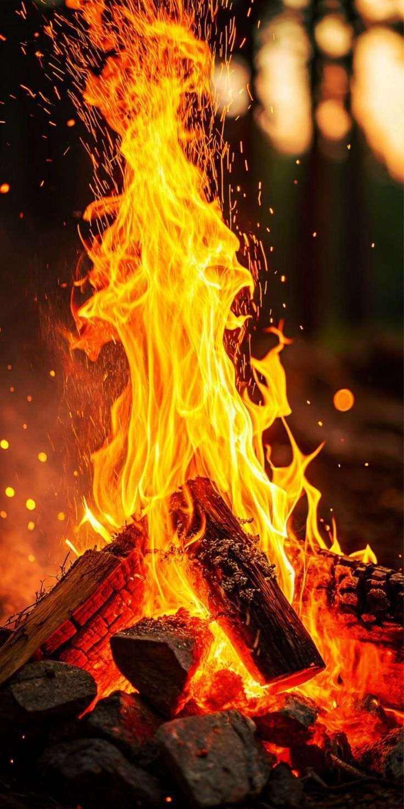
Discover the meaning and atmosphere surrounding powerful ritual moments.
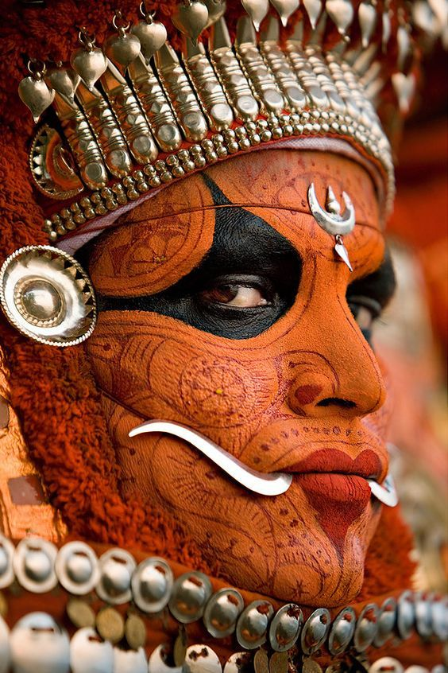
Understand the spaces where these traditions continue to live.
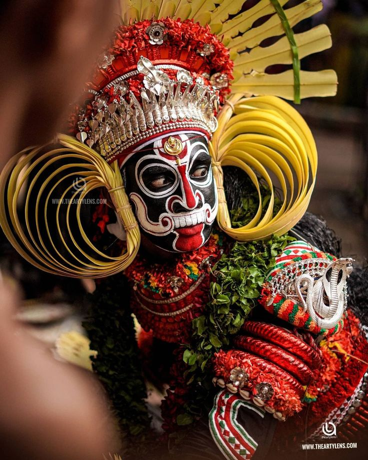
Meet the people and communities who keep these traditions alive.
Born from a love for North Malabar, our team brings together the visual perspective of a Kannur-based photographer and the road experience of a traveller from Kasaragod. Together, we explore the region through its people, landscapes, traditions and stories, creating thoughtfully planned journeys that allow guests to experience Theyyam with greater understanding, authenticity and respect.
Leads the vision, partnerships and overall journey experience. Helps guests understand the traditions, locations and stories behind each journey.
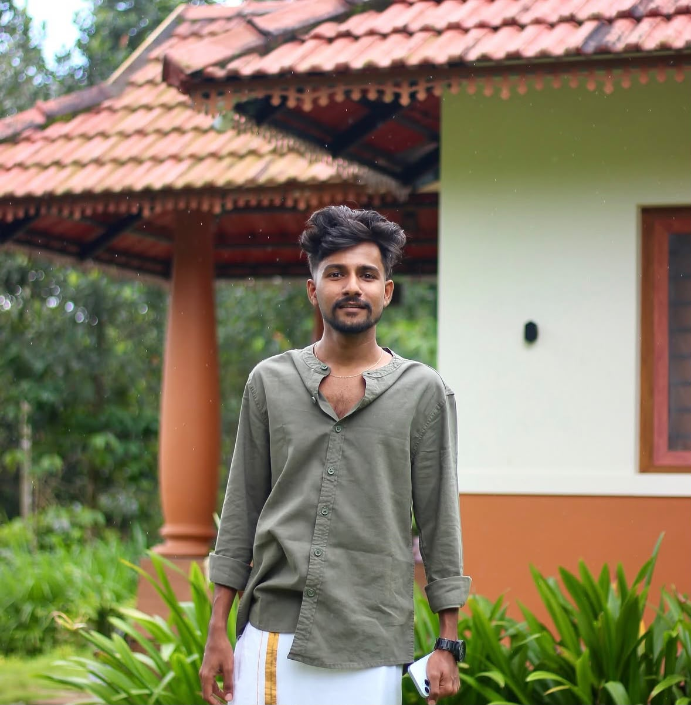
Documents the atmosphere and visual stories of the Malabar experience. Handles schedules, transport and guest coordination throughout the journey.
From short evening visits to multi-day Malabar journeys, our transport network is designed around comfort, flexibility and reliable local travel.
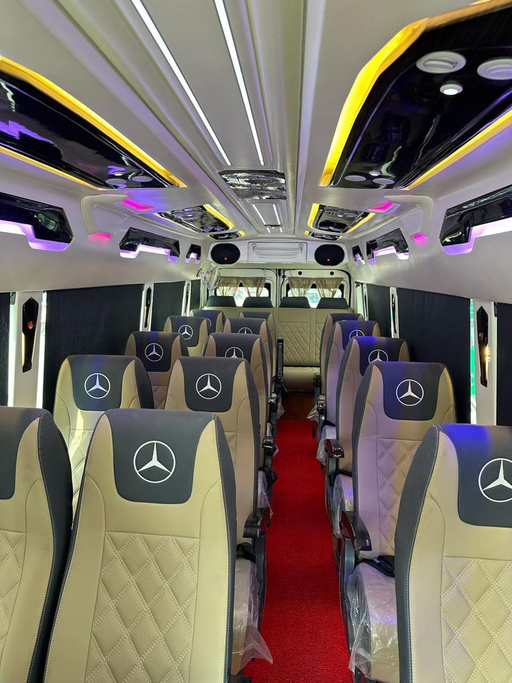

Theyyam is a sacred ritual rather than a conventional stage performance. Our journeys encourage visitors to observe respectfully, follow local instructions and respect photography restrictions.
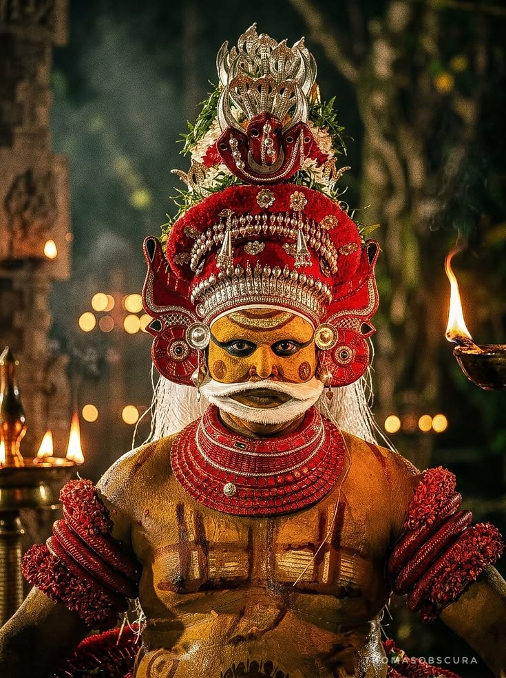
Tell us your preferred date and experience. Our team will contact you with the available performance details.